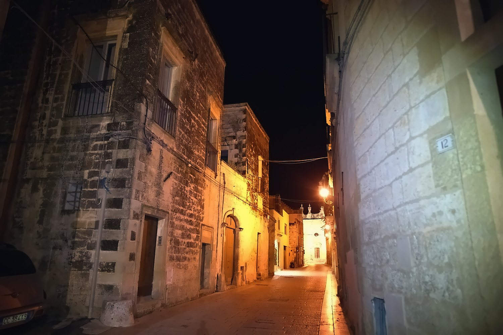
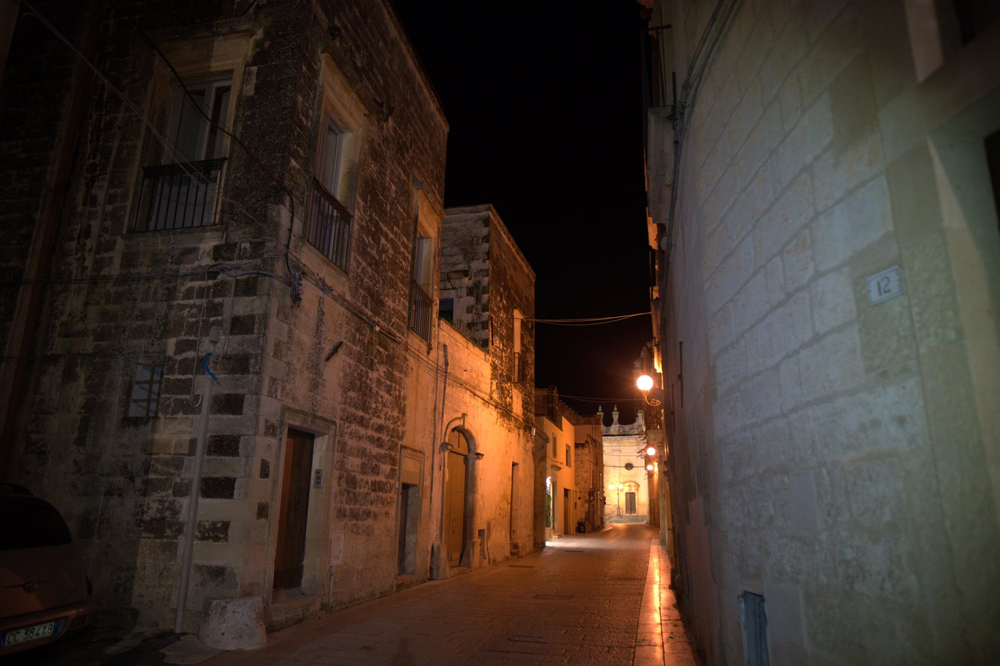
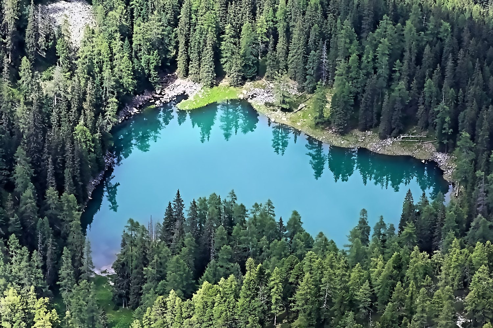
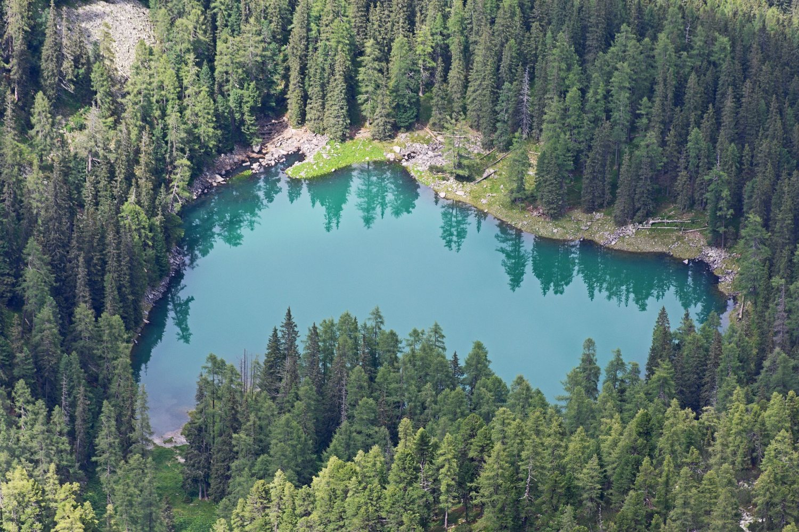
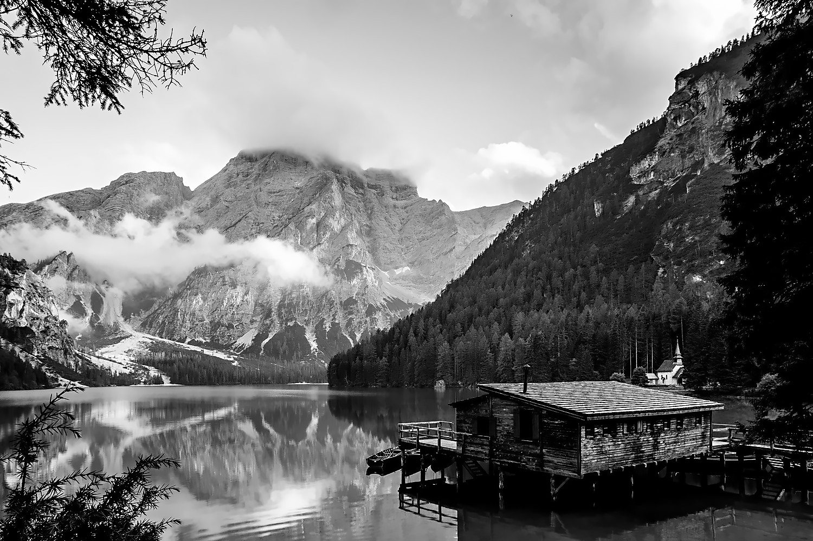
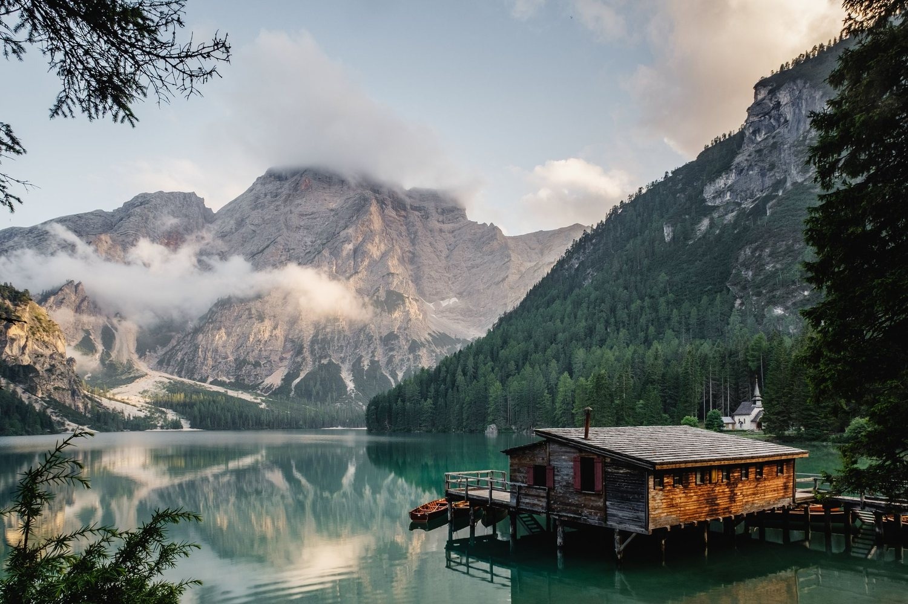
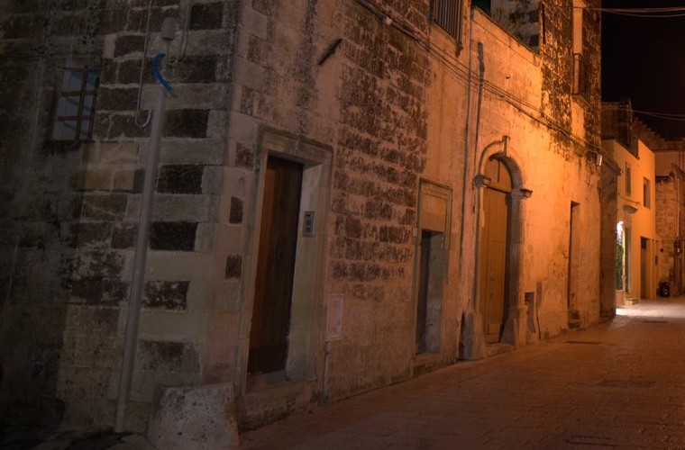
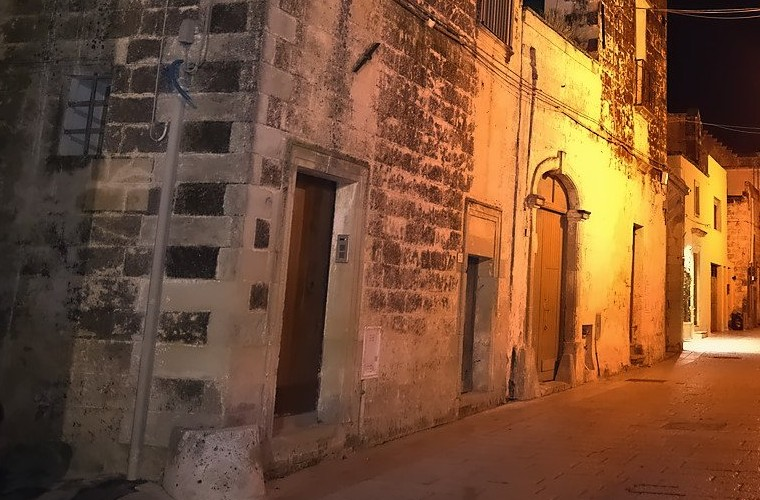
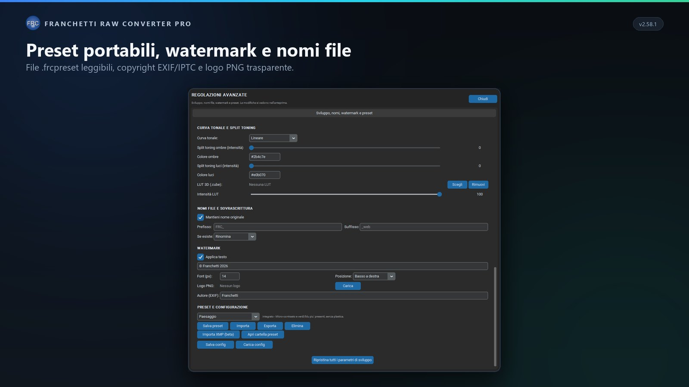
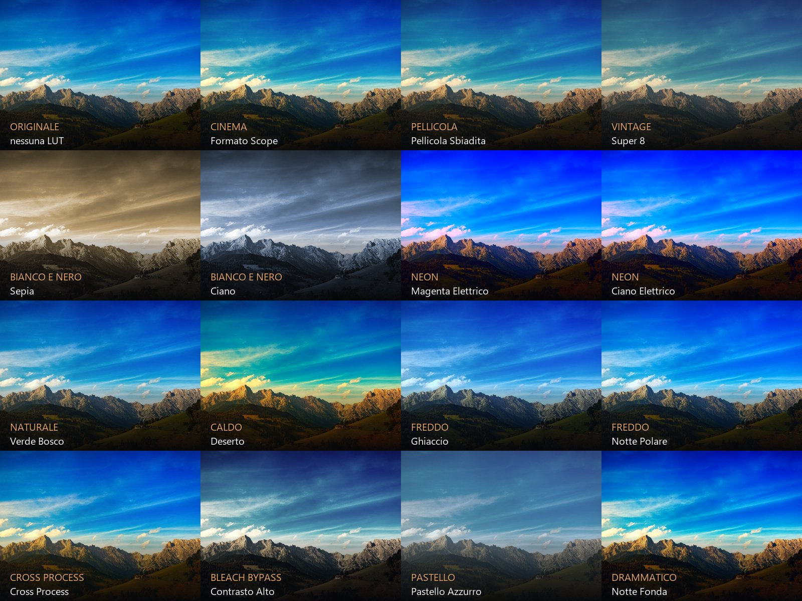

Scegli le cartelle
Trascina una o più cartelle: la scansione è ricorsiva e riconosce 27 formati RAW.
Bilanciamento del bianco e matrice della fotocamera, tono che protegge le luci, denoise guidato dal rumore, nitidezza sulla sola luminanza. Poi LUT 3D, preset portabili e batch ricorsivo. Tutto in locale, su CPU.
I RAW vengono letti e mai modificati, spostati o cancellati: si scrive solo nella cartella di output.
Nessuna telemetria, nessun account. La rete si apre solo se attivi tethering o invio cloud.
Ogni file viene scritto in temporaneo e pubblicato a conversione finita: un errore non rovina il batch.
Processi scelti in base ai core fisici e alla RAM disponibile, con tre profili di qualità.
Confronti prodotti dal motore del programma: stessa inquadratura, stesso ritaglio, nessun ritocco esterno. RAW e JPEG passano dagli stessi passaggi. Trascina la maniglia per aprire l'immagine.






Stesso ritaglio dello scatto notturno: le ombre si aprono, il rumore di crominanza si riduce, la pietra resta leggibile.


La pipeline lavora alla risoluzione finale: prima ridimensiona, poi sviluppa. Così denoise e nitidezza vedono esattamente i pixel che consegni.
LibRaw con bilanciamento del bianco e matrice della fotocamera. Demosaicizzazione AHD per Bayer, AAHD per X-Trans Fujifilm.
Lanczos-3 al lato lungo scelto, prima di ogni altra cosa: il resto della pipeline non lavora su pixel che poi butterai.
Esposizione che preserva la luminanza, contrasto sigmoide, luci, ombre, bianchi e neri. La protezione luci comprime solo la spalla.
Vivacità selettiva sulle tinte spente, saturazione, HSL su rosso, verde e blu, split toning separato per ombre e luci.
Filtro guidato sul dettaglio, non-local means solo nelle aree piatte, soglia derivata dal rumore misurato e dagli ISO.
Unsharp mask applicata alla sola luminanza, con soglia legata al rumore: contrasto percepito senza aloni colorati.
Grana, vignettatura e LUT 3D con interpolazione trilineare e intensità da 0 a 100%, calcolate a blocchi.
Watermark di testo o logo, quattro posizioni, opacità regolabile e ombra a un pixel per restare leggibile su ogni fondo.
EXIF conservati; artista, copyright e descrizione scritti anche nei blocchi IPTC dei formati che li supportano.
JPEG 4:4:4 con profilo ICC sRGB, PNG, TIFF LZW o WebP. File temporaneo e sostituzione atomica dell'output.
Dalla cartella dei RAW alla consegna, sempre con lo stesso ordine di operazioni e lo stesso risultato ripetibile.
Trascina una o più cartelle: la scansione è ricorsiva e riconosce 27 formati RAW.
Tono, colore, curva, denoise per ISO, nitidezza, grana, vignettatura, split toning e LUT.
Formato, lato lungo, qualità, schema dei nomi, watermark e metadati da conservare.
Anteprima fedele prima di partire, poi batch completo con log per file e ripresa degli errori.
Niente pannelli infiniti: le regolazioni che contano per una conversione RAW pulita, con la possibilità di salvare il risultato e ripeterlo su migliaia di file.
ARW, CR2, CR3, NEF, NRW, RAF, DNG, ORF, RW2, PEF, SRW, X3F, 3FR, FFF, RAW, RWL, DCR, K25, KDC, MOS, MRW, ERF, MEF, IIQ, CAP, BRAW, GPR. In ingresso anche JPG, PNG, TIFF, BMP e WebP.
Cartelle e sottocartelle in un solo passaggio, con prefisso, suffisso e gestione dei file già esistenti. La coda mostra elaborati, saltati ed errori.
Ogni file viene analizzato a mezza risoluzione: istogramma, clipping reale del sensore, rumore. Le correzioni vengono applicate solo dove l'istogramma le giustifica.
Un file .frcpreset è JSON leggibile: solo dati, mai codice. Import con anteprima, export, e pacchetti ZIP con SHA-256 per ogni voce.
LUT .cube con interpolazione trilineare e intensità regolabile, più split toning separato su ombre e luci. 108 LUT in omaggio.
Watermark di testo o logo, quattro posizioni, opacità regolabile. EXIF conservati e copyright scritto anche in IPTC.
Server FTP, cartella sorvegliata o Sony Wi-Fi: gli scatti arrivano, diventano anteprime firmate e finiscono in una galleria per la selezione cliente.
JPEG 4:4:4 con profilo ICC sRGB, PNG, TIFF LZW e WebP. Scrittura atomica: un file corrotto non ferma la coda e non lascia mezzi output.
Preset portabili, import XMP in beta, LUT 3D e un profilo Veloce sensibilmente più rapido. La pipeline predefinita non cambia.
Nome, autore, descrizione, tag e versione minima; sezione look con tono, colore, curva, denoise, nitidezza, grana, vignettatura e split toning; sezione output facoltativa. Nessun percorso, nessuna credenziale, nessun codice.
I preset Lightroom .xmp vengono mappati in modo parziale: esposizione, luci, ombre, bianchi, neri, contrasto, vivacità, chiarezza, dehaze, riduzione rumore, nitidezza, vignettatura, grana e split toning. Restano fuori profili camera, curve puntuali, texture e film simulation.
Interpolazione trilineare, intensità regolabile e calcolo a blocchi: una foto da 24–60 MP non alloca centinaia di MB. Se il file non è leggibile, l'immagine resta invariata.
Uno ZIP con manifest.json e i file dei preset; ogni voce è verificata con SHA-256 e importata solo manualmente. Nessun download automatico.
Se lavori in evento o in studio, il programma può ricevere i file mentre li fai, sviluppare un'anteprima, firmarla e preparare la selezione per il cliente.
Server FTP integrato sulla rete locale (porta 2121), cartella sorvegliata per le schede, oppure Sony Wi-Fi con l'app Smart Remote Control.
Decodifica con bianco e matrice della fotocamera, ridimensionamento a 2000 px e stessa resa colore della pipeline principale.
Nome del file e copyright in sovrimpressione; dati EXIF e IPTC scritti nell'anteprima, pronta da mostrare.
Galleria HTML autonoma con caselle di selezione, più invio facoltativo a Telegram, Dropbox, Google Drive, Meta o SwissTransfer.
Ogni sessione crea cartelle separate per data e ora: Originali, Anteprime_Cliente e Galleria_Cliente. La galleria è un singolo file HTML: si apre da chiavetta o da cartella condivisa, senza server e senza dipendenze esterne.
Tethering e cloud sono spenti per impostazione predefinita. Senza di essi il programma non apre nessuna connessione.
Batch, anteprima e regolazioni avanzate: le stesse finestre che usi durante la selezione e la consegna.



Gli originali non si toccano. Mai.
Il programma apre i RAW in sola lettura e scrive solo nella cartella di output che scegli. Nessun file nascosto, nessuna copia temporanea accanto agli scatti, nessuna modifica ai metadati di origine.
Dodici famiglie di look, nove varianti ciascuna, in file .cube standard. Si scaricano a parte, senza account, e si caricano nel pannello delle regolazioni avanzate.

Download separato dall'installer: un archivio ZIP, nessuna registrazione. Uso libero anche in lavori commerciali; non è consentita la rivendita del pack così com'è. Le LUT sono originali e non riproducono marchi di terzi.
Tre look pronti — Cinema caldo, Paesaggio freddo, Ritratto soft — con manifest.json e SHA-256 per ogni file.
Scarica i 3 preset 3,3 KBI formati sono quelli gestiti da LibRaw e dalla pipeline. Dove il supporto è parziale, lo diciamo qui.
27 formati RAW più le immagini già pronte.
Immagini: JPG, PNG, TIFF, BMP, WebP.
JPEG 4:4:4 con profilo ICC sRGB, PNG, TIFF LZW, WebP.
Lato lungo in pixel, qualità, schema dei nomi, watermark e metadati. I file vengono scritti in temporaneo e pubblicati solo a conversione finita.
Windows 10 e 11 a 64 bit, installer per-utente o portable. Solo CPU: nessuna GPU richiesta, nessun servizio esterno.
Processi adattivi con guardia sulla memoria disponibile. Tre profili: Veloce, Bilanciato, Massima qualità.
CR3 compresso ha supporto parziale. L'import XMP è una mappatura parziale, non una conversione 1:1. Il tethering Sony richiede l'app Smart Remote Control e il PC sulla rete della fotocamera. Le build Linux e macOS sono sperimentali.
Sì. La versione per Windows è gratuita e non richiede account, abbonamento o licenza da attivare.
No. I RAW sono aperti in sola lettura e i risultati vengono scritti esclusivamente nella cartella di output che scegli. Nessun file viene spostato, rinominato o cancellato.
Solo se attivi tethering, galleria o invio cloud. In tutti gli altri casi non apre connessioni e non invia dati di utilizzo. Non c'è telemetria.
L'installer colloca il programma nel profilo dell'utente, crea la voce nel menu Start e permette la disinstallazione dalle impostazioni di Windows. La versione portable è un singolo eseguibile: non installa nulla e si avvia dove la copi.
No. Ogni conversione scrive prima su un file temporaneo e sostituisce l'output solo alla fine. Se un file fallisce, il batch prosegue e il log riporta il motivo; i temporanei vengono rimossi.
Puoi usare il server FTP integrato (porta 2121) con la fotocamera impostata per l'invio, una cartella sorvegliata per le schede, oppure Sony Wi-Fi con l'app Smart Remote Control. Gli scatti arrivano in Originali, l'anteprima firmata in Anteprime_Cliente e la galleria HTML in Galleria_Cliente.
No, sono due download separati e facoltativi: un archivio da 4,3 MB con 108 LUT e uno da 3,3 KB con tre preset. L'installer resta un unico eseguibile da 101 MB. Le LUT si caricano dal pannello delle regolazioni avanzate con intensità da 0 a 100%.
L'installer non è firmato con un certificato commerciale, quindi SmartScreen può chiedere conferma la prima volta. Puoi verificare l'integrità del file con l'hash SHA-256 riportato qui sotto, oppure selezionare «Ulteriori informazioni» e «Esegui comunque».
I formati RAW più diffusi: Sony ARW, Canon CR2 e CR3, Nikon NEF, Fujifilm RAF, Olympus ORF, Panasonic RW2, DNG e altri, per 27 estensioni riconosciute.
Un solo file, nessun download durante l'installazione. Installazione per-utente, senza privilegi di amministratore, con disinstallazione gestita dall'installer.
Versione 2.58.1 · 101.165.696 byte · Windows 10/11 x64 · gratuito
316a34c16d45f6e3cca05e517b95797d
83bc0e88adf4199659025e4cb1b86405
Verifica con Prompt dei comandi:
Lo stesso motore di sviluppo, lo stesso batch, gli stessi preset. Su Linux c'è un pacchetto già compilato: tre comandi e parte, senza Python. Su macOS un doppio clic. Il sorgente resta per chi vuole compilare o modificare il programma.
L'interfaccia è la stessa: cambia solo il sistema che la ospita.
Ubuntu · Debian · Mint · glibc 2.35+
Pacchetto già compilato: si scompatta e si avvia, senza installare Python. La cartella _internal/ va tenuta accanto all'eseguibile.
~/.local/share/Apple Silicon · Intel
Un pacchetto con avvio automatico: doppio clic e parte, senza digitare comandi. Se preferisci, gli stessi comandi restano nella guida.
~/Library/Application Support/.app firmatoSu Linux un archivio già compilato, su macOS uno ZIP con avvio assistito. Il sorgente è a parte, per chi vuole compilare.
Su Linux: tar -xzf, poi cd FranchettiRawConverterPro. Su macOS: doppio clic sul file di avvio. Python non serve.
Si apre la finestra normale: selezioni i RAW e la destinazione, poi «Avvia conversione batch».
# nella cartella dove hai scaricato lo ZIP unzip Franchetti_Raw_Converter_Sorgente_2.58.2.zip cd FranchettiRawConverterPro-2.58.2 # Debian, Ubuntu, Mint: Tk e ambiente sudo apt install python3-tk python3 -m venv .venv source .venv/bin/activate pip install -r requirements.txt python3 main.py
# nella cartella dove hai scaricato lo ZIP unzip Franchetti_Raw_Converter_Sorgente_2.58.2.zip cd FranchettiRawConverterPro-2.58.2 # solo con Python installato da Homebrew brew install python-tk@3.12 python3 -m venv .venv source .venv/bin/activate pip install -r requirements.txt python3 main.py
python3-tkinter · su Arch: tk
Il primo pip install scarica circa 250 MB.
.deb, .rpm, .AppImage o .dmgNon sul Desktop. Su Linux: ~/.local/share/FranchettiRawConverterPro/. Su macOS: ~/Library/Application Support/FranchettiRawConverterPro/.
Su Linux lo script tools/diagnosi_linux.sh misura memoria e processi durante l'avvio.
Windows, Linux e macOS condividono la pipeline: bilanciamento del bianco, demosaic, protezione luci, denoise, nitidezza. Cambia solo il modo in cui l'applicazione viene avviata.
Tk per ogni distribuzione, primo avvio su macOS, compilazione dell'eseguibile, log e problemi comuni. Con i comandi pronti da copiare.